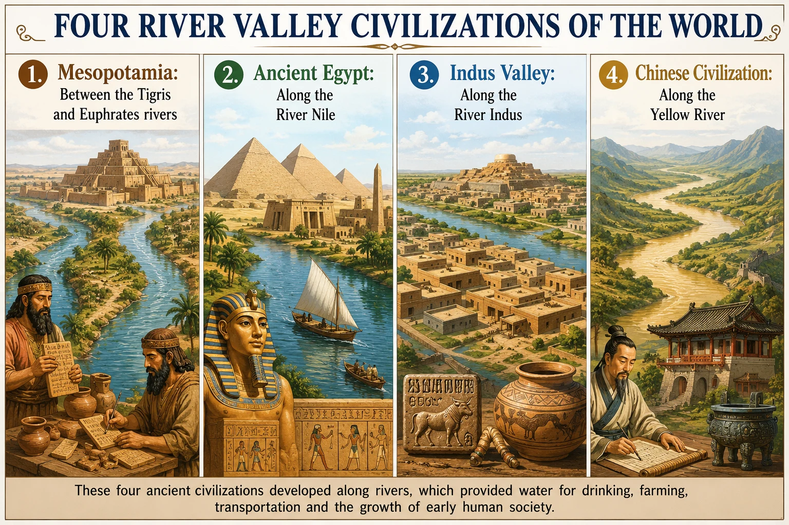
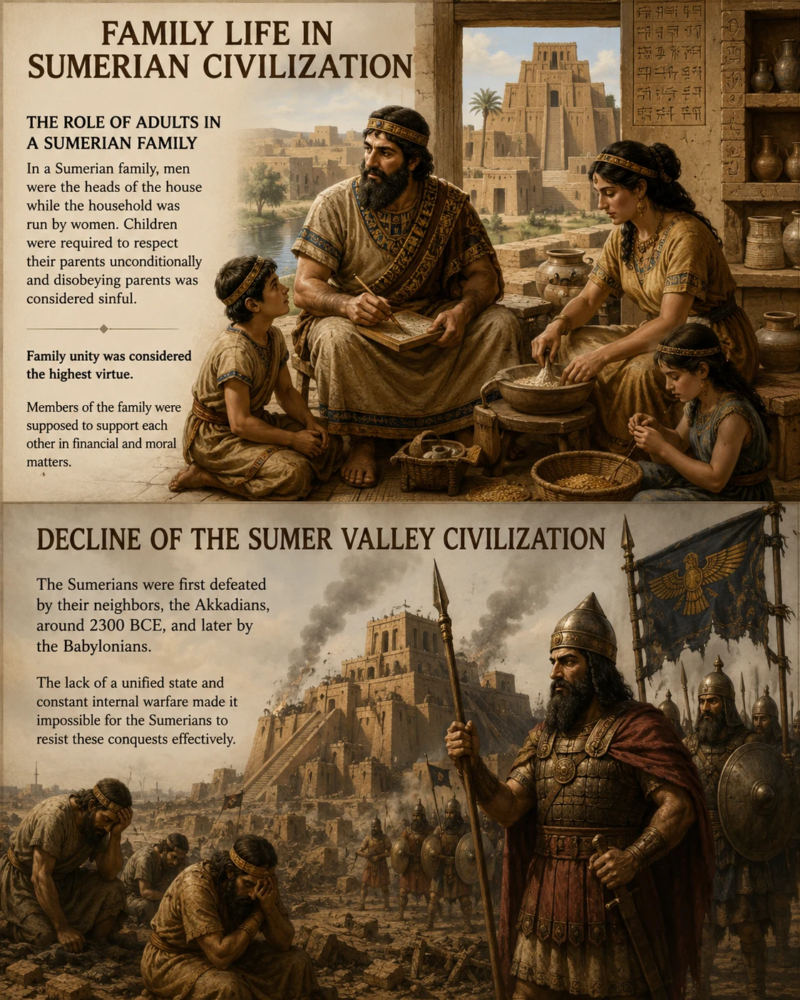
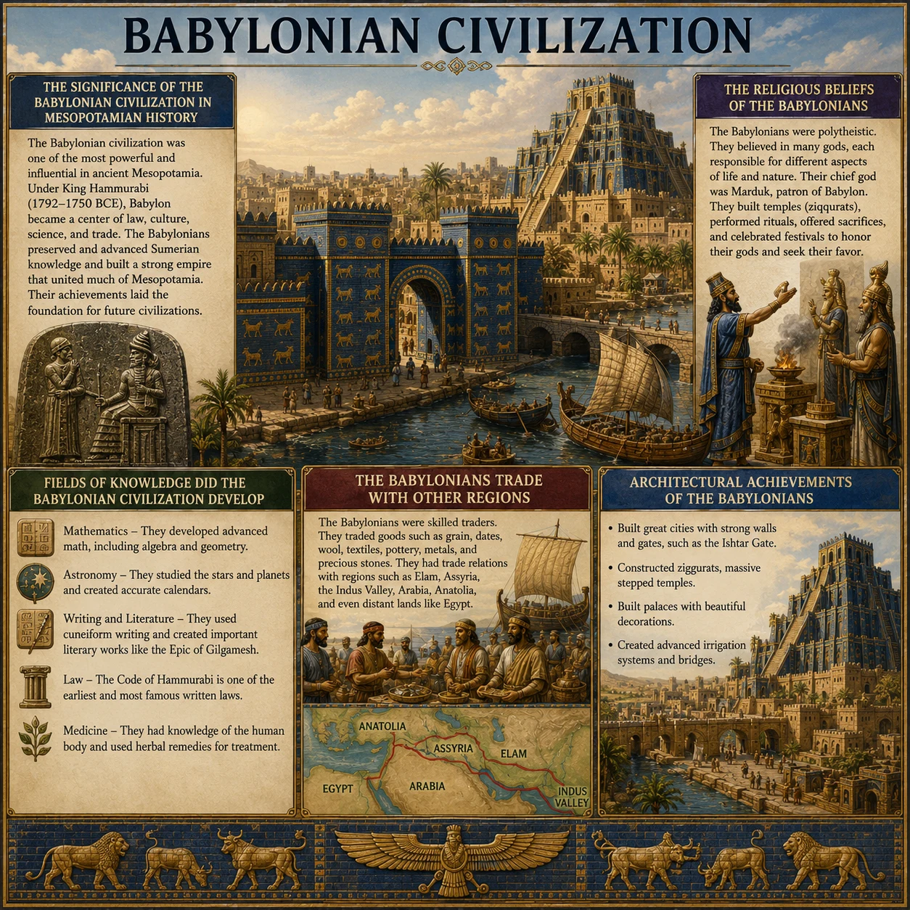
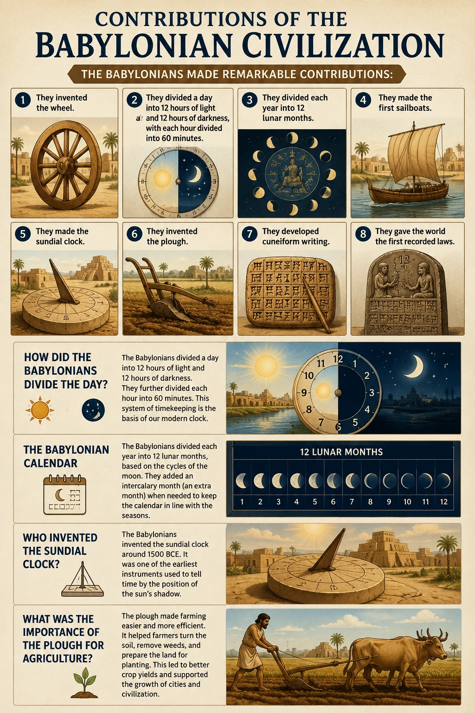
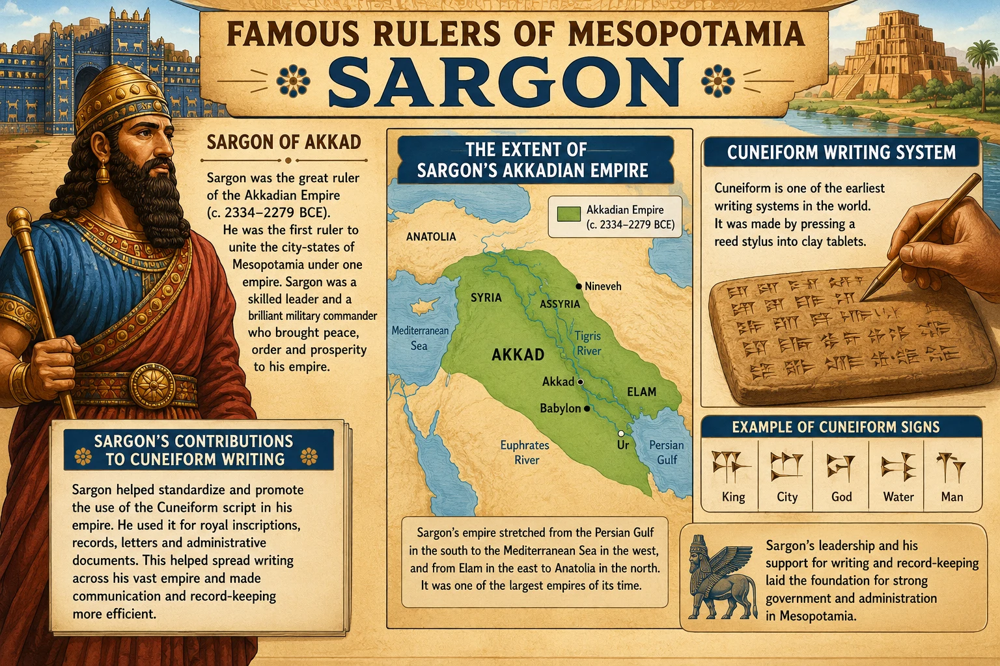
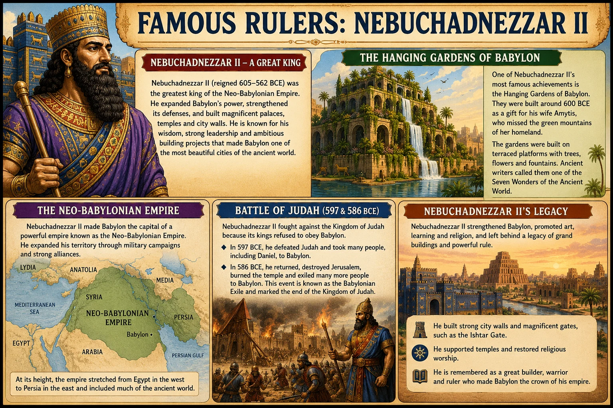
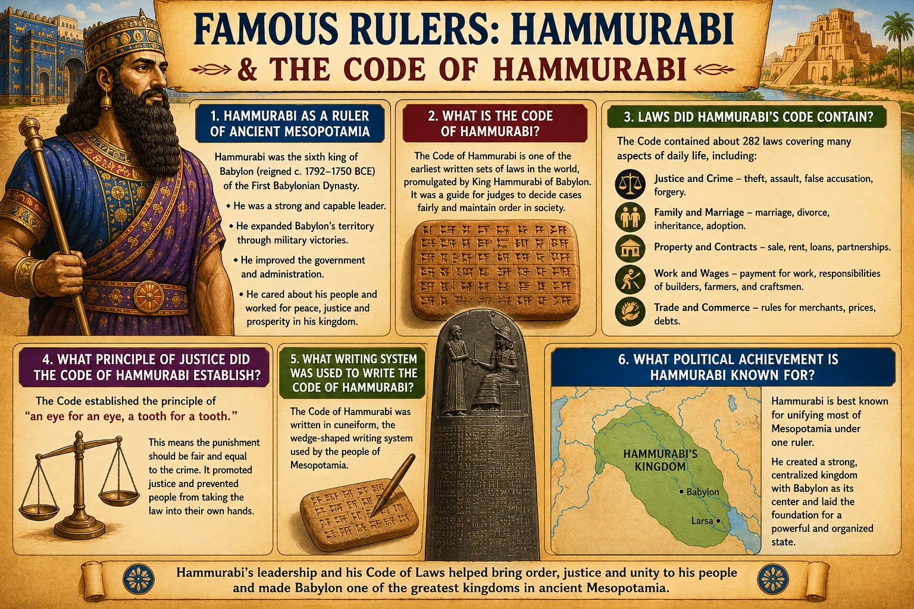

Chapter Overview
Key skills you will develop by the end of Chapter 1: Mesopotamia.
History: Mesopotamia
Complete chapter notes with all Q&A topics, diagrams, vocabulary, and exam prep — PDF format
Please note: This page is a concise preview. The complete notes with all 21 topic Q&As, diagrams, and exam-style questions are available in the PDF exclusively for enrolled students.
Chapter Diagrams
High-quality illustrated diagrams from W.H. Academy Class 6 History notes.







Why Study History & Civilization
Foundations — prehistory, civilization, and river valley civilizations.
History and Prehistory
1. What is the purpose of studying history?
2. What is prehistory? How is it different from history?
3. What is a civilization? Why did most civilizations originate near rivers?
Most civilizations originated near rivers because rivers provided water and fertile land. When rivers flooded, alluvial soil (rich, fertile soil deposited by floodwater) was deposited on surrounding land, making it highly suitable for growing crops.
4. What are the six key components of a civilization?
1. Urban Centers — cities with surplus food supply
2. Government — to rule and administer territories
3. Social Order — division of society into classes
4. Beliefs — religion and cultural traditions
5. Art — monuments, architecture, ruins
6. Writing — communication and record keeping
5. Name the four major river valley civilizations of the world with their dates.
1. Mesopotamia — between the Tigris and Euphrates rivers (6000–2500 BCE)
2. Ancient Egypt — along the River Nile (3500–50 BCE)
3. Indus Valley — along the River Indus (3000–1200 BCE)
4. Chinese Civilization — along the Yellow River (2500 BCE–100 CE)
Mesopotamia & The Sumerians
The land between the rivers, Sumerian society, beliefs, and innovations.
Mesopotamia and the Sumerians
1. What is Mesopotamia? Where is it located?
2. What was the social order of the Sumerians?
1. Upper Class — priests, landowners, and government officials
2. Middle Class — traders, craftsmen, and artisans
3. Lower Class / Slaves — farmers, servants, and slaves
Priests held great power as they interpreted the will of the gods and controlled temple lands.
3. What were the key innovations of the Sumerians?
• The Wheel — first used for pottery, later for transportation
• Cuneiform Writing — the world's first known writing system
• Irrigation systems — canals to bring water to crops
• The Plough — for farming
• The Ziggurat — a stepped temple structure, center of city life
• A numerical system based on 60 (we still use 60 seconds/minutes today)
4. What is cuneiform? Why was it significant?
Cuneiform was used for: recording trade transactions, writing laws, religious texts, and historical accounts. It was a revolutionary advancement because it allowed knowledge and history to be preserved across generations.
5. What caused the decline of the Sumer Valley Civilization?
• Soil salinization — over-irrigation made the soil too salty to grow crops
• Invasion by Akkadians under Sargon of Akkad (~2334 BCE)
• Internal conflict among city-states
• Natural disasters including floods and droughts
The Akkadian Empire absorbed Sumer, leading to the rise of later empires like Babylon.
Babylon & Famous Rulers
Babylonian civilization, Sargon, Nebuchadnezzar II, and Hammurabi's Code.
Babylonian Empire and its Rulers
1. What were the main features of the Babylonian Civilization?
Key features: a highly organized government, a complex legal system, advanced mathematics and astronomy, the Hanging Gardens of Babylon (one of the Seven Wonders), and a powerful trade network. The Babylonians built on Sumerian achievements and expanded their empire significantly.
2. Who was Sargon of Akkad? Why is he important in Mesopotamian history?
He was significant because he demonstrated that different city-states could be governed under a centralized power.
3. Who was Nebuchadnezzar II? What was he famous for?
• Building the Hanging Gardens of Babylon (one of the Seven Wonders of the Ancient World)
• Rebuilding the city of Babylon into one of the most magnificent cities of the ancient world
• The Destruction of Jerusalem and the Babylonian Captivity of the Jews (~586 BCE)
4. Who was Hammurabi? What is the Code of Hammurabi?
The Code of Hammurabi was one of the earliest and most complete written legal codes in world history. It consisted of 282 laws inscribed on a large black stone stele. Key principles:
• "An eye for an eye, a tooth for a tooth" — punishments matched the crime
• Different penalties for different social classes
• Laws covered trade, property, marriage, and criminal behavior
It was significant because it established the principle that law applies to everyone and that rulers must be accountable.
5. What is the difference between primary and secondary sources?
Primary Sources — original, first-hand records created at the time of the event. Examples: artefacts, clay tablets, diaries, paintings, cuneiform inscriptions, archaeological remains.
Secondary Sources — accounts written after the event, based on primary sources. Examples: textbooks, biographies, documentaries, history books.
Because historians rely on both, their interpretations of the same event sometimes vary.
Key Terms
Important vocabulary for Chapter 1: Mesopotamia.
| Term | Simple Meaning |
|---|---|
| Prehistory | Period of human history before written records existed |
| Civilization | The society, culture, and way of life of people in a specific area and time |
| Alluvial soil | Fertile soil deposited by floodwaters, very good for farming |
| Mesopotamia | Ancient region between the Tigris and Euphrates rivers; modern-day Iraq |
| Cuneiform | The world's first writing system, using wedge-shaped marks on clay tablets |
| Ziggurat | A massive stepped temple structure built by the Sumerians |
| Code of Hammurabi | One of the earliest written legal codes, consisting of 282 laws from ancient Babylon |
| Primary Source | An original, first-hand record created at the time of the event |
| Secondary Source | An account written later, based on primary sources |
| Irrigation | Bringing water from rivers to farmland through channels and canals |
| Surplus | More than enough — extra supply beyond what is needed |
| Urban centers | Towns and cities with many occupations and services |
| BCE / CE | Before Common Era / Common Era — ways of labeling years in history |
Want Full Chapter Notes & Expert Guidance?
Enroll with W.H. Academy for complete chapter-by-chapter notes, personalized tutoring, and exam preparation by M. Rehan Safdar.